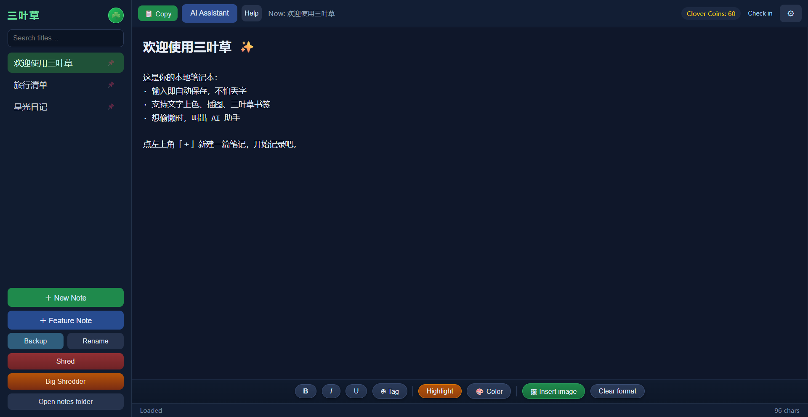
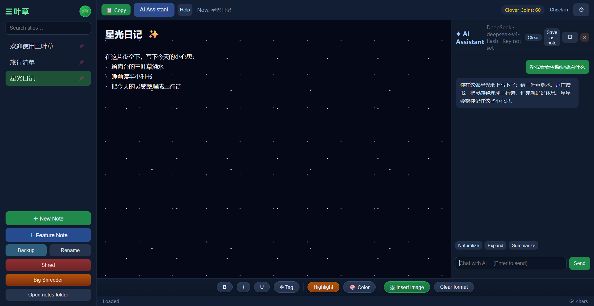
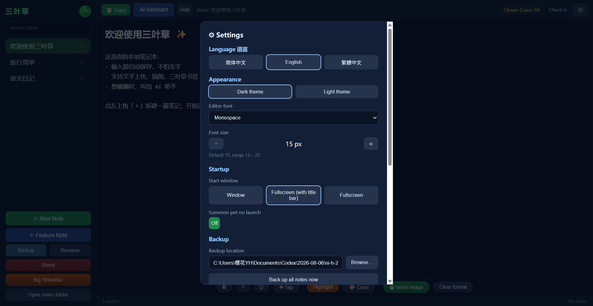

它能帮你做什么
从随手记录到让 AI 参与思考，一个软件就够了。
本地记事本
自动保存、标题搜索、置顶、碎纸机与批量删除、文字上色与插图；笔记以本地文件保存，随时备份不丢失。
内置多 AI
DeepSeek、豆包、GLM、ChatGPT、千问自由切换，模型可选或自定义；每篇笔记独立对话记忆，聊天可一键存为笔记。
特色纸面
星光、扑克、小清新、粉泡泡、浪花五种主题纸；每日签到赚三叶草币解锁，赞助码也能兑换。
桌面小精灵
三叶草小精灵住在桌面陪你：可拖拽、有专属小功能，还能设置随软件一起启动。
三语界面
简体中文、English、繁體中文完整翻译，设置里一键切换，帮助与设置同样全量翻译。
隐私与授权
API Key 只在本机加密保存、无日志回传；激活码一机一码并绑定硬件，防止拷贝转卖。
下载与购买
一个版本，买断即用；目前支持 Windows 电脑，安卓 / iOS 正在规划中。
三叶草 · Windows 版
- 一码一机，永久使用
- 后续电脑版更新免费
- 软件内自动更新，不用手动换包
- 数据 100% 存在自己电脑里
- 联系作者获取激活码，可远程协助安装
联系方式与正式下载链接开售后公布；手机版上线后会另行公告。
更新日志
软件内点击“帮助 → 检查更新”即可收到新版提示。
- 三语界面全量完善：简中 / English / 繁體，设置里一键切换
- AI 助手升级：五家服务商、模型下拉选择或自定义、每篇笔记独立对话、一键存为笔记
- 五种特色纸面：星光 / 扑克 / 小清新 / 粉泡泡 / 浪花
- 三叶草币体系：每日签到 +20、赞助码兑换、防篡改签名
- 笔记管理完善：多篇置顶、碎纸机、大型碎纸机批量删除、文字上色、插图、备份 / 导入
- 桌面小精灵：拖拽与互动、快捷小功能、可设置随软件启动
- 设置升级：语言 / 字号 / 字体 / 深浅主题 / 窗口与全屏，保存后生效
- 离线加固：多因子机器码、激活码一机一码、程序文件自检，防拷贝转卖
- 本地笔记：自动保存、标题搜索、置顶与删除
- 初代特色纸面与桌面小精灵、三叶草币签到
- AI 助手接入多家服务商，分笔记独立对话
常见问题
我的笔记存在哪里？会不会丢？
所有笔记都以文件形式保存在软件旁的「笔记」文件夹里，随时可以整文件夹备份，或使用软件内置的“备份全部 / 导入”功能。把整个软件文件夹复制一份就是完整备份。
AI 功能怎么用？要额外花钱吗？
在「AI 助手 → AI 设置」里填入你自己的 API Key 即可，支持 DeepSeek、豆包、GLM、ChatGPT、千问。费用由对应服务商按用量收取，与三叶草无关；不填 Key 也能正常当记事本使用。
新建/重命名时输入框突然打不出字怎么办？
偶尔会遇到输入法尚未就位的情况，直接关闭软件重新打开即可，笔记不会丢失。
为什么激活码换电脑不能用？
激活码绑定单台电脑的硬件信息，用于防止拷贝转卖。换电脑后联系作者，提供新机器码即可重新激活。
以后更新要重新付费吗？
不用。当前版本为一次性买断，后续 Windows 电脑版更新免费，软件内会自动提醒并更新。
有手机版吗？
目前只有 Windows 电脑版；安卓 / iOS 正在规划中，上线后会在这里和软件内同步公告。